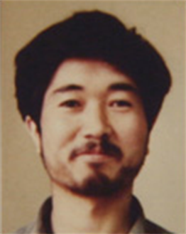

永山則夫について
19歳の時、4人を殺害した永山則夫。その裁判で明らかになったのは、虐待、貧困、児童労働、教育の欠如、愛情の欠如、人間関係の欠如といった、壮絶な少年時代でした。永山は判決後、獄中で学び、1997年の死刑執行までの間に『無知の涙』『木橋』など数々の作品を著します。
永山則夫が生前語っていたこと、死刑執行後には「遺言」となった言葉にはこうありました。「本の印税を日本と世界の貧しい子どもたちへ、 特にペルーの貧しい子どもたちに使ってほしい」。
1996年にペルーで起こった「日本大使公邸占拠・人質事件」。この報道を通じて永山は、ペルーの「働く子どもたち」と子どもたちを支援する活動について知ります。
貧困と虐待から、小学生の頃から新聞配達などの労働の場に身を置き、19歳の逮捕時には読み書きすらままならなかったという永山。貧しい子どもたち、特に、生活のために働かざるを得ない子どもたち、そしてその子どもたちの「生きる権利・働く権利」を守る活動に、強い思いを抱いたのかもしれません。